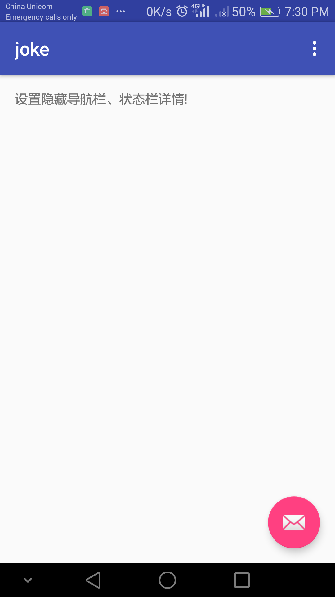
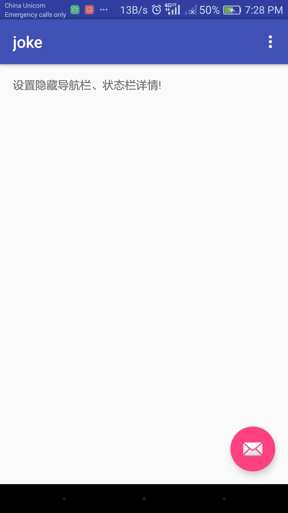
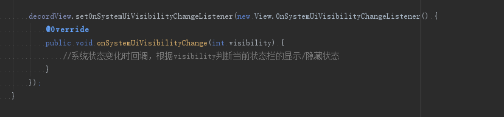

系统状态栏和导航栏控制
隐藏状态栏、导航栏详情
如果使用这种方法，内容大小本身并不会发生变化，只是系统状态栏下的图标会隐藏掉，只要用户点击了屏幕上的状态栏或者导航栏，两者都会变成完全显示出来。使用这种方法的优势在于状态栏跟导航栏是存在的，只是把其内容隐藏了起来。在不用牺牲状态栏跟导航栏入口的情况下，创建出体验更好的沉浸式应用。
View decordView = getWindow().getDecorView();
int option = View.SYSTEM_UI_FLAG_LOW_PROFILE;
decordView.setSystemUiVisibility(option);
注：decordView只是作为一个样例，事实上你可以使用任何的可见视图。
默认的布局样式效果如下：

隐藏状态栏、导航栏详情后的效果如下：

setSystemUiVisibility 方法接收以下参数：
- SYSTEM_UI_FLAG_LOW_PROFILE 设置导航栏详情隐藏
- SYSTEM_UI_FLAG_LAYOUT_STABLE 设置布局内容固定，不随着状态栏伸缩进行变化
- SYSTEM_UI_FLAG_FULLSCREEN 设置全屏，隐藏系统状态栏，导航栏。
- SYSTEM_UI_FLAG_LAYOUT_FULLSCREEN 设置全屏，布局充满整个界面，但不隐藏状态栏、导栏等。
- SYSTEM_UI_FLAG_HIDE_NAVIGATION 设置隐藏系统导航栏
- SYSTEM_UI_FLAG_LAYOUT_HIDE_NAVIGATION 不隐藏导航栏，布局内容填满导航栏部分，会出现折叠。
- SYSTEM_UI_FLAG_IMMERSIVE_STICKY 设置粘性沉浸式样式
- SYSTEM_UI_FLAG_IMMERSIVE 设置成沉浸式样式
第一个我们上面已经详细介绍过，接下来看看下面的三个对应的作用及效果
设置全屏
使用这个方法会重新调整内容布局的大小，同时隐藏起系统状态栏和导航栏
View decordView = getWindow().getDecorView();
int option = View.SYSTEM_UI_FLAG_FULLSCREEN;
decordView.setSystemUiVisibility(option);
设置导航栏隐藏
使用这个方法会重新调整内容布局的大小，同时隐藏起系统导航栏
View decordView = getWindow().getDecorView();
int option = View.SYSTEM_UI_FLAG_HIDE_NAVIGATION;
decordView.setSystemUiVisibility(option);SYSTEM_UI_FLAG_HIDE_NAVIGATION
如果你想通过代码清除以上设置，恢复成系统原来的样子，可以同通过传入0清空之前所设置的标识，具体代码如下：
View decordView = getWindow().getDecorView();
decordView.setSystemUiVisibility(0);
这样系统状态栏跟导航栏又会恢复到默认的样式。
设置沉浸式样式

取消当前设置，恢复系统原来的样子：

设置粘性沉浸式样式

如果想监听系统bar状态转化的过程，可以通过注册setOnSystemUiVisibilityChangeListener() 